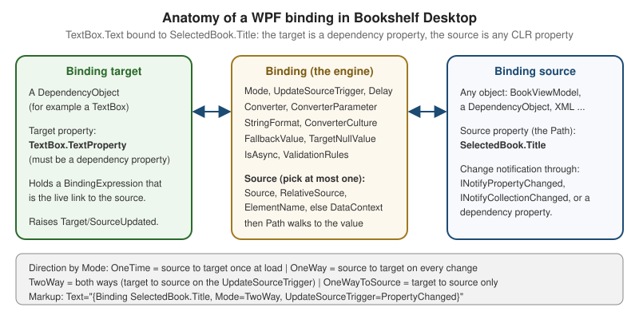

Data Binding
|
This content was generated with the assistance of AI and should be verified against the official documentation before being relied on in production. |
Data binding is the mechanism that keeps a user interface and the objects behind it in sync without code-behind that
copies values back and forth. A binding connects a property of a UI element (the target) to a property of any object
(the source), and a small engine in the framework moves values between them, converting and formatting on the way. It is
the glue of the MVVM pattern: the view model exposes properties and commands, the view binds to them, and neither knows
about the other’s concrete type. This page was written against .NET 10 LTS (latest patch 10.0.13) with C# 14,
Visual Studio 2026 18.11.1, Windows App SDK 2.5.1 and CommunityToolkit.Mvvm 8.4.2 on Windows 10 and
Windows 11. .NET 11 is at release candidate 2 (11.0.0-rc.2), general availability is expected at .NET Conf, 10 to 13
November 2026, and the .NET 11 WPF release notes list bug fixes only at the time of writing, so nothing here changes for
it. WPF is the stack in focus; WinUI 3 (x:Bind) and Windows Forms (BindingSource) are compared in a table near the end.
The running scenario is Bookshelf Desktop. A BooksViewModel holds an ObservableCollection of BookViewModel items,
a SearchText and a SelectedBook; the main window binds a search box, a list and a details pane to them. The
view model uses the MVVM Toolkit source generators; the C# language features behind change notification (events and
delegates) are explained on the Delegates, Lambdas and Events page, and the
collection types on Collections and Iterators. Value converters, collection views (sort, filter, group) and data templates are the next page, Converters, Collection Views & Data Templates, and validation is Validation; here they appear only as far as the binding itself needs
them. The syntax of markup extensions as such is on the Markup Extensions & Namescopes page, and the stack-level
differences are in the XAML Dialects: WPF, WinUI & MAUI page.
The mental model: target, binding, source
Every binding has four ingredients, and Microsoft’s overview names them the same way:
-
a binding target object, which must be a
DependencyObject; -
a target property, which must be a dependency property (a plain CLR property cannot be a target);
-
a binding source, which can be any .NET object (a view model, another element, an XML node, a database row);
-
a path to the value inside the source.
The Binding class describes the relationship, and when it is applied to a target property WPF creates a
BindingExpression, the live object that subscribes to the source, reads and writes values and reports errors. The
Binding is the declaration, shared and immutable once in use; the BindingExpression is the instance bound to one target.

The source never needs to know it is being bound. What it must do is announce changes if the UI is to follow them, through one of three mechanisms:
| Source kind | How change is announced | Notes |
|---|---|---|
CLR object (the usual view model) |
Implements |
The recommended mechanism. The MVVM Toolkit generates it for you. |
|
The property is a dependency property, which has built-in change notification. |
Used when binding element to element, for example |
Collection |
Implements |
Item changes inside the collection still need |
Plain CLR object with no notification |
Nothing. The value is read once when the binding activates. |
Works for static data. A property read through reflection descriptors can also keep the source alive (see Pitfalls). |
The official documentation lists further source types (ADO.NET DataTable, XmlDataProvider with XPath,
ObjectDataProvider); they are still supported on .NET 10 but rare in new MVVM code, so they are not used below.
A first binding and the DataContext
The shortest useful binding names only a path, with no explicit source:
<TextBlock Text="{Binding Title}" />Source: Data binding overview (WPF)
With no Source, RelativeSource or ElementName, the binding takes its source from the target element’s
DataContext. DataContext is a dependency property defined on FrameworkElement and FrameworkContentElement
whose value is inherited down the logical tree: set it once on the Window and every descendant that does not
override it uses the same object. A binding with an empty path, {Binding}, binds to the DataContext object itself,
which is how a TextBlock inside a DataTemplate shows a string item.
The DataContext of the main window is normally set by composition code. Bookshelf Desktop builds its view models in the
Generic Host and gives the window its view model before showing it:
namespace Bookshelf.Desktop;
using Microsoft.Extensions.DependencyInjection;
using Microsoft.Extensions.Hosting;
using System.Windows;
public partial class App : Application
{
private readonly IHost _host = Host.CreateDefaultBuilder()
.ConfigureServices(services =>
{
services.AddSingleton<IBookRepository, SqliteBookRepository>();
services.AddSingleton<IDialogService, WpfDialogService>();
services.AddSingleton<BooksViewModel>();
services.AddSingleton<MainWindow>();
})
.Build();
protected override async void OnStartup(StartupEventArgs e)
{
await _host.StartAsync();
var window = _host.Services.GetRequiredService<MainWindow>();
window.DataContext = _host.Services.GetRequiredService<BooksViewModel>();
window.Show();
base.OnStartup(e);
}
}Source: Specify the binding source; the host wiring follows Dependency injection overview
The same assignment can be written in XAML as a design-time and run-time choice. The d:DataContext form below only
affects the designer; it gives IntelliSense for the paths without creating the object at run time:
<Window x:Class="Bookshelf.Desktop.MainWindow"
xmlns="http://schemas.microsoft.com/winfx/2006/xaml/presentation"
xmlns:x="http://schemas.microsoft.com/winfx/2006/xaml"
xmlns:d="http://schemas.microsoft.com/expression/blend/2008"
xmlns:mc="http://schemas.openxmlformats.org/markup-compatibility/2006"
xmlns:vm="clr-namespace:Bookshelf.Desktop"
mc:Ignorable="d"
d:DataContext="{d:DesignInstance Type=vm:BooksViewModel}"
Title="Bookshelf Desktop" Height="520" Width="860">
<!-- the real DataContext is assigned in App.OnStartup -->
</Window>How the source is resolved
A Binding has exactly one way of locating its source. WPF applies them in this order, and you should set at most one of
the first three:
| Property | Meaning | Typical use |
|---|---|---|
|
An explicit object, for example a resource or |
A converter, a shared settings object, a constant. |
|
A position relative to the target in the tree (see the next table). |
Reaching a parent control, or the target itself. |
|
The |
Element-to-element links, such as a label showing a slider value. |
none of the above |
The target’s |
The default, and the normal case for MVVM. |
RelativeSource takes a RelativeSourceMode:
| Mode | Meaning |
|---|---|
|
The target element itself, for example |
|
Walks up the visual/logical tree to the first ancestor of |
|
The control a template is applied to; the long form of |
|
The previous data item in a list, used to compare an item to the one before it. |
The Path is a small language: Author.Name walks properties, Tags[0] uses an indexer, (Grid.Row) names an attached
property, / addresses the current item of a collection view (Books/Title), and Path=. or no path means "the source
itself".
<StackPanel Margin="12">
<TextBox x:Name="SearchBox"
Text="{Binding SearchText, UpdateSourceTrigger=PropertyChanged, Delay=250}" />
<!-- ElementName: another element is the source -->
<TextBlock Text="{Binding Text.Length, ElementName=SearchBox, StringFormat='{}{0} characters typed'}" />
<!-- RelativeSource Self: this element is the source -->
<TextBox x:Name="IsbnBox" Width="160"
ToolTip="{Binding RelativeSource={RelativeSource Self}, Path=Text}" />
<!-- RelativeSource FindAncestor: inside a template, reach the window DataContext -->
<ListBox ItemsSource="{Binding Books}">
<ListBox.ItemTemplate>
<DataTemplate>
<StackPanel Orientation="Horizontal">
<TextBlock Text="{Binding Title}" />
<Button Content="Remove" Margin="8,0,0,0"
Command="{Binding DataContext.RemoveBookCommand,
RelativeSource={RelativeSource AncestorType=Window}}"
CommandParameter="{Binding}" />
</StackPanel>
</DataTemplate>
</ListBox.ItemTemplate>
</ListBox>
</StackPanel>Inside the DataTemplate the DataContext is the item (a BookViewModel), which is why the remove button must reach back
through FindAncestor to the window’s DataContext to find the command that lives on BooksViewModel. Note that an
ElementName binding resolves within a namescope; a template has its own, which is explained on Markup Extensions & Namescopes.
The Binding options
All options are properties of Binding (MultiBinding and PriorityBinding share many). The table covers the ones used in
practice; defaults are those of the class.
| Property | What it does | Default and notes |
|---|---|---|
|
Path to the value in the source (first constructor argument and the first positional value in markup). |
Empty: the source object itself. |
|
Direction of data flow: |
|
|
When a |
|
|
An |
Without a converter a default type conversion is attempted. Without |
|
A .NET composite format string applied when the target property is a |
Ignored if a |
|
Value used when the binding cannot produce one (path error, no source, converter returned |
Not used when the source legitimately returns |
|
Value shown when the source value is |
Different from |
|
Milliseconds to wait after the last change before updating the source of a |
|
|
Fetches the source property on a thread-pool thread so a slow getter does not block the UI. |
|
|
Where the source is found (previous section). |
Mutually exclusive. |
|
Path inside an XML source instead of |
For |
|
Bind to the |
|
|
Raise the attached events |
|
|
Raise |
|
|
Which validation sources feed the error state of the binding. |
|
|
A callback that decides what to do with an exception thrown while setting the source. |
Rare; |
|
Joins the binding to a |
For edit forms with transactional commit. |
Mode and the default
Mode selects the direction of the flow:
| Mode | Direction | Use for |
|---|---|---|
|
Source to target, once, when the binding is created (and when |
Data that never changes; cheapest, and releases the source from change tracking. |
|
Source to target, on every source change. |
Read-only display such as a title or a count. |
|
Both ways: source changes update the target, and target changes (on the trigger) update the source. |
Editable input. |
|
Target to source only. |
Pushing a control’s value into the model when the control cannot be a source, for example |
|
Chosen by the target property. |
The default for a binding that does not name a mode. |
The "default" is not constant. A dependency property declares in its FrameworkPropertyMetadata whether it binds two-way
by default (BindsTwoWayByDefault). TextBox.Text, CheckBox.IsChecked, Slider.Value and the selection
properties of selectors (SelectedItem, SelectedValue) are two-way by default; TextBlock.Text, Visibility and
almost every other property are one-way. Microsoft’s guidance is to state the mode explicitly where it matters for
readability; the examples on this page do so.
UpdateSourceTrigger
For a two-way binding the question is when the user’s edit travels to the source:
| Value | Behavior | Typical use |
|---|---|---|
|
Every change of the target property updates the source immediately (each keystroke in a |
Live search, as-you-type validation. Combine with |
|
The source is updated when the target loses focus. This is the default of |
Edit forms, so half-typed values are not pushed and validated. |
|
The source is updated only when code calls |
An OK button commits all fields at once. |
|
The target property’s own default. |
Not normally written. |
Bookshelf Desktop’s search box uses PropertyChanged with a Delay; the edit dialog uses Explicit so Cancel really
cancels:
namespace Bookshelf.Desktop;
using System.Windows;
using System.Windows.Controls;
using System.Windows.Data;
public partial class EditBookDialog : Window
{
public EditBookDialog() => InitializeComponent();
private void OnOkClick(object sender, RoutedEventArgs e)
{
// Explicit trigger: nothing reached the view model until now.
foreach (var box in new[] { TitleBox, AuthorBox, YearBox })
{
BindingExpression? expression = box.GetBindingExpression(TextBox.TextProperty);
expression?.UpdateSource();
}
if (Validation.GetHasError(TitleBox) || Validation.GetHasError(YearBox))
{
return;
}
DialogResult = true;
}
}The matching XAML names the three TextBox controls and uses UpdateSourceTrigger=Explicit; the two numeric ones add a
StringFormat and a FallbackValue:
<StackPanel Margin="16" MinWidth="320">
<TextBlock Text="Title" />
<TextBox x:Name="TitleBox"
Text="{Binding Title, Mode=TwoWay, UpdateSourceTrigger=Explicit,
ValidatesOnNotifyDataErrors=True}" />
<TextBlock Text="Author" Margin="0,8,0,0" />
<TextBox x:Name="AuthorBox"
Text="{Binding Author, Mode=TwoWay, UpdateSourceTrigger=Explicit,
TargetNullValue=''}" />
<TextBlock Text="Year" Margin="0,8,0,0" />
<TextBox x:Name="YearBox"
Text="{Binding Year, Mode=TwoWay, UpdateSourceTrigger=Explicit,
FallbackValue='?', ValidatesOnExceptions=True}" />
<StackPanel Orientation="Horizontal" HorizontalAlignment="Right" Margin="0,16,0,0">
<Button Content="OK" IsDefault="True" Click="OnOkClick" Width="80" />
<Button Content="Cancel" IsCancel="True" Width="80" Margin="8,0,0,0" />
</StackPanel>
</StackPanel>Source: Binding declarations overview
StringFormat, FallbackValue and TargetNullValue
These three are the options that most often remove the need for a converter:
<StackPanel>
<!-- StringFormat on a string target: currency, dates, padding -->
<TextBlock Text="{Binding Price, StringFormat={}{0:C2}}" />
<TextBlock Text="{Binding Published, StringFormat='Published on {0:d}'}" />
<!-- TargetNullValue: the source is null (a book without a rating) -->
<TextBlock Text="{Binding Rating, StringFormat={}{0:0.0} / 5, TargetNullValue='not rated'}" />
<!-- FallbackValue: the path does not exist or the binding is broken -->
<TextBlock Text="{Binding Publisher.Name, FallbackValue='unknown publisher'}" />
<!-- Content targets use ContentStringFormat -->
<Button Content="{Binding PageCount}" ContentStringFormat="{}{0} pages" />
</StackPanel>Source: Binding declarations overview
StringFormat follows the general .NET composite formatting rules and uses the ConverterCulture (hence the target’s
Language, en-US by default) rather than the thread culture; set Language or ConverterCulture for a localized app,
which is covered on the Globalization & Localization page. A format string whose first character is { must start with
{} so the XAML parser does not read it as a markup extension, which is the reason for StringFormat={}{0:C2}.
Change notification with INotifyPropertyChanged
For OneWay and TwoWay bindings to update the UI, the source raises PropertyChanged with the name of the changed
property. Written by hand it is repetitive:
namespace Bookshelf.Desktop;
using System.ComponentModel;
using System.Runtime.CompilerServices;
public sealed class HandWrittenBook : INotifyPropertyChanged
{
private string _title = "";
public event PropertyChangedEventHandler? PropertyChanged;
public string Title
{
get => _title;
set
{
if (_title == value)
{
return;
}
_title = value;
OnPropertyChanged();
}
}
private void OnPropertyChanged([CallerMemberName] string? propertyName = null) =>
PropertyChanged?.Invoke(this, new PropertyChangedEventArgs(propertyName));
}The event, the PropertyChangedEventHandler delegate and the null-conditional invocation are the C# features covered on
the Delegates, Lambdas and Events page; the binding
engine is simply a subscriber to that event. With the MVVM Toolkit 8.4.2, the [ObservableProperty] generator writes the
backing field, the property and the notification, and on the C# 14 baseline of this section it is applied to a partial
property:
namespace Bookshelf.Desktop.ViewModels;
using Bookshelf.Core;
using CommunityToolkit.Mvvm.ComponentModel;
public partial class BookViewModel(Book book) : ObservableObject
{
// The wrapped Book is an immutable record: these members read through to it and never change.
public Book Model { get; } = book;
public int Id => Model.Id;
public string Title => Model.Title;
public string Author => Model.Author;
public int Year => Model.Year;
public decimal Price => Model.Price;
public string DisplayName => $"{Title} by {Author}";
[ObservableProperty]
public partial bool IsFavorite { get; set; }
// A property that changes after load: the view model, not the record, carries it.
[ObservableProperty]
[NotifyPropertyChangedFor(nameof(RatingText))]
public partial double? Rating { get; set; }
// A computed property: it must be re-announced when its input changes.
public string RatingText => Rating is { } rating ? $"{rating:0.0} / 5" : "not rated";
partial void OnRatingChanged(double? value)
{
// The generated hook runs after the value changed; here a high rating marks the book as a favourite.
IsFavorite = value >= 4;
}
}Source: ObservableProperty attribute
[NotifyPropertyChangedFor] and the generated OnRatingChanged hook are the toolkit’s two ways to re-announce a dependent
property; announcing an empty name (OnPropertyChanged(string.Empty)) tells every binding on the object to refresh.
Partial properties are a C# 13 feature (on .NET 9 the toolkit needed LangVersion set to preview); with
CommunityToolkit.Mvvm 8.4.1 or later and the default C# 14 of .NET 10, no LangVersion setting is needed.
Collections and ObservableCollection
A binding to ItemsSource needs INotifyCollectionChanged to see items added, removed or moved.
ObservableCollection<T> (namespace System.Collections.ObjectModel) is the standard implementation. Replacing the whole
collection instance also works but requires the Books property itself to raise PropertyChanged:
namespace Bookshelf.Desktop.ViewModels;
using System.Collections.ObjectModel;
using Bookshelf.Core;
using CommunityToolkit.Mvvm.ComponentModel;
using CommunityToolkit.Mvvm.Input;
public partial class BooksViewModel(IBookRepository repository, IDialogService dialogs) : ObservableObject
{
public ObservableCollection<BookViewModel> Books { get; } = [];
[ObservableProperty]
[NotifyCanExecuteChangedFor(nameof(RemoveBookCommand))]
public partial BookViewModel? SelectedBook { get; set; }
[ObservableProperty]
public partial string SearchText { get; set; } = "";
[ObservableProperty]
public partial bool IsLoading { get; set; }
[RelayCommand]
private async Task LoadAsync(CancellationToken cancellationToken)
{
IsLoading = true;
try
{
IReadOnlyList<Book> books = await repository.GetAllAsync(cancellationToken);
// Mutate on the UI thread: the collection raises CollectionChanged to the bindings.
Books.Clear();
foreach (Book book in books)
{
Books.Add(new BookViewModel(book));
}
}
finally
{
IsLoading = false;
}
}
[RelayCommand(CanExecute = nameof(CanRemove))]
private async Task RemoveBookAsync(BookViewModel? book)
{
if (book is null || !await dialogs.ConfirmAsync("Remove book", $"Remove '{book.Title}'?"))
{
return;
}
await repository.DeleteAsync(book.Id, CancellationToken.None);
Books.Remove(book);
}
private bool CanRemove(BookViewModel? book) => book is not null;
}IBookRepository and IDialogService are the Bookshelf Desktop interfaces defined for the scenario; they are not framework
APIs. RemoveBookCommand takes the item as a CommandParameter and complements the DeleteSelectedCommand of the canonical
view model; IsLoading is an extra member added for the binding examples of this page.
The corresponding XAML binds the search box, the list and the details pane. The details pane binds through
SelectedBook with a dotted path, and FallbackValue and TargetNullValue cover the moment nothing is selected:
<Grid Margin="12">
<Grid.ColumnDefinitions>
<ColumnDefinition Width="2*" />
<ColumnDefinition Width="3*" />
</Grid.ColumnDefinitions>
<DockPanel Grid.Column="0" Margin="0,0,12,0">
<TextBox DockPanel.Dock="Top"
Text="{Binding SearchText, Mode=TwoWay,
UpdateSourceTrigger=PropertyChanged, Delay=250}" />
<ListBox ItemsSource="{Binding Books}"
SelectedItem="{Binding SelectedBook, Mode=TwoWay}"
DisplayMemberPath="Title" />
</DockPanel>
<StackPanel Grid.Column="1" DataContext="{Binding SelectedBook}">
<TextBlock FontSize="20" FontWeight="SemiBold"
Text="{Binding Title, FallbackValue='Select a book'}" />
<TextBlock Text="{Binding Author, TargetNullValue='Unknown author'}" />
<TextBlock Text="{Binding Price, StringFormat={}{0:C2}}" />
<TextBlock Text="{Binding Rating, StringFormat={}{0:0.0} / 5, TargetNullValue='not rated'}" />
</StackPanel>
</Grid>Source: Binding sources overview
The right-hand pane re-sets its own DataContext to SelectedBook: the DataContext is inherited, so each child binding
resolves against the selected book instead of the view model. This is a common and cheap way to shorten paths, but a binding
on the pane itself that needs the view model then needs RelativeSource or a different structure.
Threads and collections
PropertyChanged notifications raised on a background thread are marshalled to the dispatcher by the binding engine for
scalar properties, but CollectionChanged is not: changing an ObservableCollection<T> bound to the UI from a
non-UI thread throws NotSupportedException. Either update the collection on the UI thread (as LoadAsync does, after the
await resumes on the DispatcherSynchronizationContext) or call BindingOperations.EnableCollectionSynchronization;
both are covered on the Threading, the Dispatcher & Async page. The automatic marshalling of scalar PropertyChanged notifications is the engine’s behavior as generally
described for WPF, but this page could not confirm it against a specific Learn page, so do not rely on it for a hot path:
raise notifications on the UI thread.
MultiBinding and PriorityBinding
MultiBinding
A MultiBinding feeds one target property from several source values. It needs either a Converter that implements
IMultiValueConverter, or a StringFormat:
<TextBlock>
<TextBlock.Text>
<MultiBinding StringFormat="{}{0} by {1} ({2})" FallbackValue="...">
<Binding Path="Title" />
<Binding Path="Author" TargetNullValue="unknown author" />
<Binding Path="Year" />
</MultiBinding>
</TextBlock.Text>
</TextBlock>Source: MultiBinding class
With a converter, the values arrive in an object[] in the order the child bindings are declared:
namespace Bookshelf.Desktop.Converters;
using System.Globalization;
using System.Windows;
using System.Windows.Data;
public sealed class AvailabilityConverter : IMultiValueConverter
{
public object Convert(object[] values, Type targetType, object parameter, CultureInfo culture)
{
// Values can be DependencyProperty.UnsetValue while sources are not ready.
if (values.Length < 2 || values[0] is not int copies || values[1] is not bool onLoan)
{
return DependencyProperty.UnsetValue;
}
return onLoan ? "On loan" : copies > 0 ? $"{copies} available" : "Out of stock";
}
public object[] ConvertBack(object value, Type[] targetTypes, object parameter, CultureInfo culture) =>
throw new NotSupportedException();
}Source: IMultiValueConverter interface
<Window.Resources>
<local:AvailabilityConverter x:Key="AvailabilityConverter"
xmlns:local="clr-namespace:Bookshelf.Desktop.Converters" />
</Window.Resources>
<TextBlock>
<TextBlock.Text>
<MultiBinding Converter="{StaticResource AvailabilityConverter}">
<Binding Path="Copies" />
<Binding Path="IsOnLoan" />
</MultiBinding>
</TextBlock.Text>
</TextBlock>Source: MultiBinding class
Two special return values matter in converters: DependencyProperty.UnsetValue means "I cannot produce a value", which
makes the target use FallbackValue, and Binding.DoNothing means "leave the target unchanged". Because the converter is
the only place where several values meet, a computed property on the view model (RatingText above) is often a simpler
and testable alternative; MultiBinding shines when the inputs are UI-only, such as ActualWidth and ActualHeight.
PriorityBinding
A PriorityBinding lists several bindings in decreasing priority and shows the value of the highest-priority one that
has produced a result. Combined with IsAsync=True, it shows a quick, low-quality value first and replaces it when the
slower, better one arrives:
<Image Width="120" Height="180" Stretch="UniformToFill">
<Image.Source>
<PriorityBinding FallbackValue="{x:Null}">
<!-- first = highest priority: the full-resolution cover, slow to fetch -->
<Binding Path="FullCoverUri" IsAsync="True" />
<!-- last = lowest priority: the cached thumbnail, available immediately -->
<Binding Path="ThumbnailUri" IsAsync="True" />
</PriorityBinding>
</Image.Source>
</Image>Source: PriorityBinding class
FullCoverUri and ThumbnailUri are properties of the Bookshelf Desktop BookViewModel in this scenario (the class shown
earlier would grow them); Image.Source accepts a Uri through the default type conversion. Learn has no dedicated
how-to article for PriorityBinding or MultiBinding beyond the API pages and the binding overview, so the examples above
are derived from the API reference. A higher-priority binding that becomes available later replaces the lower-priority
value; once the highest binding has a value, the lower ones are ignored.
IsAsync
IsAsync is the framework’s original answer to a slow source property getter. When it is set, the binding reads the
property on a thread-pool thread and shows FallbackValue (or the target’s default) until the read finishes. It has a
narrow purpose: it does not help with a slow operation, only with a slow getter, and it hides the cost rather than
removing it. In MVVM code the usual approach is the opposite: the view model starts the work with an async command,
exposes IsLoading and the result, and binds to those. The MVVM Toolkit’s AsyncRelayCommand exposes IsRunning and
ExecutionTask, which can be bound directly to show a progress indicator (see the MVVM Toolkit (CommunityToolkit.Mvvm) page).
Bindings in code
Everything declared in markup can be created in code. BindingOperations is the static helper, and
FrameworkElement.SetBinding is the shortcut for elements:
namespace Bookshelf.Desktop;
using System.Windows;
using System.Windows.Controls;
using System.Windows.Data;
public static class BindingFactory
{
public static void BindStatus(TextBlock statusText, BooksViewModel viewModel)
{
var binding = new Binding(nameof(BooksViewModel.IsLoading))
{
Source = viewModel,
Mode = BindingMode.OneWay,
Converter = new BooleanToStringConverter("Loading books...", "Ready"),
};
// BindingOperations works for any DependencyObject, including Freezables and content elements.
BindingOperations.SetBinding(statusText, TextBlock.TextProperty, binding);
// Equivalent for a FrameworkElement:
// statusText.SetBinding(TextBlock.TextProperty, binding);
}
public static void Detach(TextBlock statusText) =>
BindingOperations.ClearBinding(statusText, TextBlock.TextProperty);
}
public sealed class BooleanToStringConverter(string whenTrue, string whenFalse) : IValueConverter
{
public object Convert(object value, Type targetType, object parameter, System.Globalization.CultureInfo culture) =>
value is true ? whenTrue : whenFalse;
public object ConvertBack(object value, Type targetType, object parameter, System.Globalization.CultureInfo culture) =>
throw new NotSupportedException();
}Source: Create a binding in code
BindingOperations.GetBindingExpression(target, property) returns the live BindingExpression, on which
UpdateTarget() and UpdateSource() force a transfer, and BindingOperations.ClearBinding removes the link. Also
useful is BindingOperations.GetBinding, which returns the Binding declaration. A Binding object becomes
sealed (read-only) after it has been used, so clone it or create a new one to change it.
Diagnosing binding problems
A binding that fails does not throw; it produces a trace message, shows the FallbackValue (or the property default) and
the UI silently stays empty. That is the single most common data-binding problem, and a short toolkit finds nearly all of
them.
| Tool | What it shows |
|---|---|
Visual Studio Output window (Debug) |
Messages such as |
XAML Binding Failures window |
A Visual Studio debugger window that lists failed bindings with target, path and reason, collected while the app runs; open it from Debug, Windows. It is a Visual Studio feature, not a WPF API, and Microsoft Learn has no standalone page for it that I could verify. |
Live Visual Tree and Live Property Explorer |
Inspect the running tree and each property’s value source; a binding shows as a |
|
An attached property that turns on detailed trace output for one binding: every step of source resolution, converter calls and the final value. |
|
The |
A debugging converter |
A pass-through |
The attached property is added with the System.Diagnostics namespace from WindowsBase:
<Window xmlns:diag="clr-namespace:System.Diagnostics;assembly=WindowsBase">
<TextBlock Text="{Binding Titel, diag:PresentationTraceSources.TraceLevel=High}" />
</Window>Source: PresentationTraceSources class
and the global switch is set once at startup, for example in a debug build:
namespace Bookshelf.Desktop;
using System.Diagnostics;
using System.Windows;
public partial class App : Application
{
[Conditional("DEBUG")]
private static void ConfigureBindingTrace()
{
PresentationTraceSources.Refresh();
PresentationTraceSources.DataBindingSource.Listeners.Add(new ConsoleTraceListener());
PresentationTraceSources.DataBindingSource.Switch.Level = SourceLevels.Warning | SourceLevels.Error;
}
}Source: PresentationTraceSources class
Common failures and their causes:
| Symptom | Likely cause |
|---|---|
The control stays empty, no error |
No |
Error 40, property not found |
A typo in the path, a property that is |
The UI shows the first value but never updates |
The source does not raise |
A list does not show added items |
The collection is a |
Input is not pushed to the view model |
|
|
The named element is in another namescope (inside a template) or is declared lower in the tree and not yet loaded. |
Pitfalls
-
Memory leaks through bindings. A
OneWayorTwoWaybinding to a source that does not implementINotifyPropertyChangedmakes WPF subscribe through aPropertyDescriptor, which can keep the source alive for the life of the app. Bind to sources that implement the interface, or useOneTimefor static data. -
Binding to the wrong type of member. Fields,
internalmembers and methods cannot be bound (a method result can be bound only through anObjectDataProvider, which is rarely worth it); expose a property. -
Raising
PropertyChangedwith the wrong name. A string typo silently breaks the update; usenameof,[CallerMemberName]or the generated code. -
Setting a bound property in code-behind. Assigning a literal to a bound target property, for example
box.Text = "x", sets a local value and replaces the binding. Set the source property instead, or callSetCurrentValueso the binding stays in place. -
Heavy converters and formatting in
TwoWaytext boxes. WithUpdateSourceTrigger=PropertyChanged, a round trip occurs on every keystroke. A failed parse in the middle of typing (1.for a decimal) can reformat the text under the user. UseLostFocus, orDelayplus a lenient parse. -
Many bindings in virtualized lists. Each item template instantiates its bindings on realization. Prefer fewer, simpler bindings per item and
OneTimewhere the value never changes; see the Performance & Diagnostics page. -
Security. A binding path is data-driven only if you build it from user input, which you should not do. Never construct
Bindingpaths or load XAML (XamlReader) from untrusted input. -
Order of initialization. A
DataContextset beforeInitializeComponentfinishes can raise changes early; the usual convention is to set it right beforeShow().
What changed across .NET Framework and modern .NET
The WPF binding engine is the same code base in .NET Framework 4.8 and in .NET 10; Binding, MultiBinding,
PriorityBinding, BindingOperations and PresentationTraceSources behave as they did. What changed is around them:
-
Namespaces and assemblies moved to the SDK project model:
PresentationFramework,PresentationCoreandWindowsBaseare included byUseWPFin thenet10.0-windowsproject, so theassembly=WindowsBasemapping above works unchanged. -
Nullable reference types make
Binding?andBindingExpression?explicit return types in the code shown, andobject?appears in converter signatures in current templates. -
The MVVM Toolkit 8.4 partial-property generator (partial properties are a C# 13 feature; 8.4.1 or later needs no
LangVersionsetting on .NET 10) replaces the older field-based form that the[ObservableProperty] private string _titlepattern used. -
The Fluent theme introduced in .NET 9 (
ThemeMode, experimental) restyles controls but does not touch binding behavior. -
Learn’s WPF data pages themselves have not been rewritten for modern .NET; their content, including the code in the "Source" pages cited here, is the same as for .NET Framework. Neither the .NET 9, 10 nor the .NET 11 RC 2 "what’s new in WPF" pages list changes to the binding engine as far as I can verify.
WPF, WinUI 3 and Windows Forms compared
Windows Forms has had data binding since .NET Framework 1.0 with a different, simpler model; WinUI 3 has two binding
systems, the classic Binding and the compiled x:Bind.
| Aspect | WPF Binding |
WinUI 3 x:Bind (and Binding) |
WinForms Binding and BindingSource |
|---|---|---|---|
Declaration |
|
|
|
Source |
|
|
A data source object, usually a |
Default mode |
By target property ( |
|
Two-way: the control updates the source and the source updates the control (with change notification). |
Type checking |
None; failures appear as trace messages at run time. |
|
Strings for member names; mistakes fail at run time. |
Converters and formatting |
|
|
|
Multiple sources |
|
Function bindings take several arguments; there is no |
One data member per binding. |
Notification |
|
|
|
Collections and current item |
|
Items controls bind to a collection; sorting and filtering are done in the view model. |
|
Commands |
|
|
.NET 8 added |
The Bookshelf Desktop search box in the three stacks
<!-- WPF -->
<TextBox Text="{Binding SearchText, Mode=TwoWay, UpdateSourceTrigger=PropertyChanged, Delay=250}" />
<!-- WinUI 3: compiled, strongly typed, resolved against the page class -->
<TextBox Text="{x:Bind ViewModel.SearchText, Mode=TwoWay, UpdateSourceTrigger=PropertyChanged}" />// WinForms: BindingSource over a BindingList, with the view model as the item
var booksSource = new BindingSource { DataSource = viewModel.BooksList };
searchBox.DataBindings.Add(
nameof(TextBox.Text),
viewModel,
nameof(BooksViewModel.SearchText),
formattingEnabled: false,
DataSourceUpdateMode.OnPropertyChanged);
booksGrid.DataSource = booksSource;In WinUI 3 the page exposes ViewModel as a property and x:Bind generates code against it, which removes the reflection
cost and gives compile-time errors for typos. x:Bind is not available in WPF; a WPF compiled-binding feature does not
exist. For the WinUI version of the whole screen see the WinUI 3 & the Windows App SDK page, and for Windows Forms the
Windows Forms on .NET page, both later in the section.
What Microsoft Learn does not provide
-
There is no Learn MVVM article specifically for WPF. The binding pages are the conceptual base; MVVM guidance lives in the MAUI enterprise-patterns book and the WinUI "Data binding and MVVM" page, which is
x:Bind-based. The WPF examples here useBindingwith aDataContext, as WPF has nox:Bind. -
No how-to for
PriorityBindingorMultiBindingbeyond the API reference pages and the binding overview; the examples above are derived from those. -
The XAML Binding Failures window is documented in the Visual Studio docs, if at all, with screenshots of older versions; the page does not claim a verified URL for it.
-
The WPF data pages are legacy pages (written for .NET Framework 3.x and 4.x); they do not discuss C# 14, nullable annotations or the MVVM Toolkit generators. The toolkit usage here comes from the toolkit’s own documentation.
-
Performance numbers for binding (cost per binding,
OneTimeagainstOneWay) are not published; the guidance in Pitfalls is community experience and should be measured on your own app.
References
-
Delegates, Lambdas and Events for the event and delegate mechanics behind
INotifyPropertyChanged -
Collections and Iterators for the collection types behind
ObservableCollection<T>